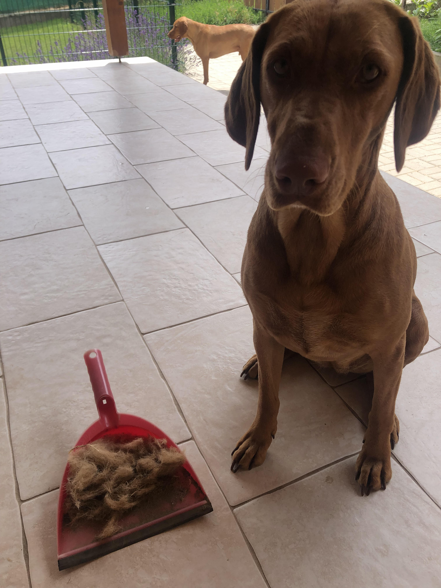
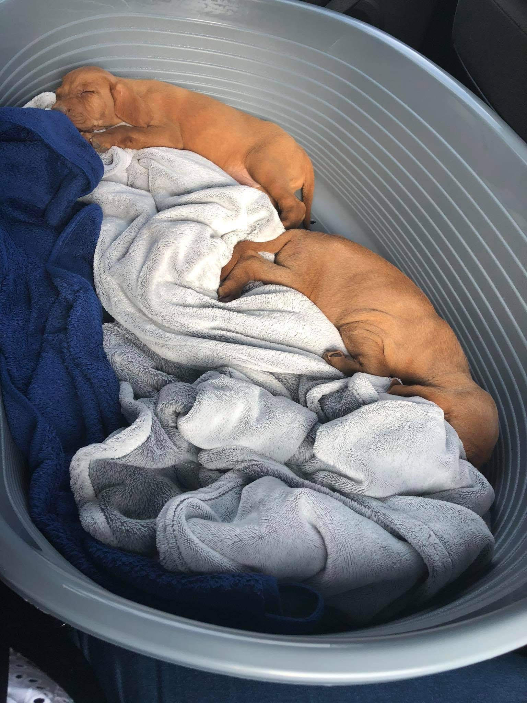
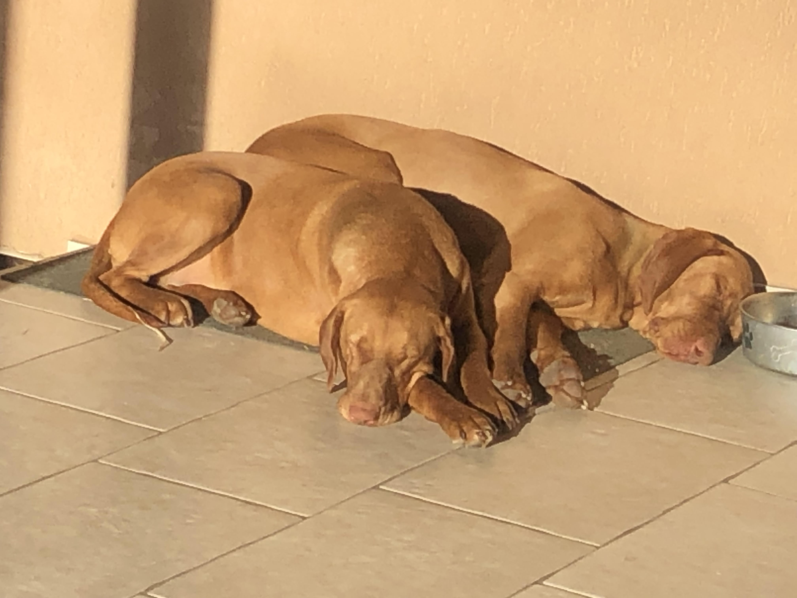

Meddig élnek a kutyák?
A hűséges ebeink viszont (sajnos) nem az idő végtelenségéig élnek. Azt hogy meddig élnek, pedig nem más dönti el, mint a kutyánknak a termete, tömege.
A közepes termetű kutyák (mint például az én vizsláim is) általában 12-14 évig élnek. Az ezeknél kisebb kutyák általában pedig akár 16-18 évig is élhetnek. A különösen apró termetű kutyáknak viszont rövid életük van, pont úgy, mint ahogy a skála másik végén elhelyezkedő 70-80 kilós kutyák, mint például az angol masztiff. Ez azért érdekes, mert az emlősöknél ez a jelenség éppen, hogy fordított szokott lenni: a nagyobb testű fajok általában tovább élnek, mint a kisebbek.
A kutya táplálása
A kutyák ragadozó állatok, bár ma nem vadásznak, mint egykor az őseik.
A megszokott a felnőtt kutyáknál az, hogy naponta egy étkezéssel letudják az aznapi evést. Vannak olyan fajok, amelyeknek viszont jobb, ha többször adunk enni csak kevesebbet, mert egy nagyobb etetés sokkal megerőltetőbb a kutyának, mint két kisebb. így könnyebb elkerülni a gyomortágulást, gyomorcsavarodást és egyéb súlyos következményeket.
Vannak válogatos kutyák is, amelyek összezavarhatják gazdáikat: Adjak-e új tápot a kutyának, váltogassam-e a tápokat, stb stb.. A válogatos kutyák gyakran maga a gazda miatt lesznek azok például, ha sokszor megszánják a kutyát mindenféle nyalánksággal, arra sarkalva ezzel a kutyát, hogy ne legyen hajlandó megenni a tápját. A kutyák viszont nem unják meg az ízre elfogadható vacsorákat, az emésztésüknek jót tesz, ha egy időben van mindig az étkezés, ha rendszeres. Ha a kutyánk mégis válogatóssá válna, vegyük el tőle az ételt a következő etetésig.
Ezeken kívül még az eb életszakasza is egy nagy szerepet játszik. Általában 3-4 hetes korukig szopnak, utána pedig lassan átállnak szilárd táplálékra. Csak 6 hetes koruk után szabad magában tápot adni nekik. 4-5 hónapos korig napi 3, majd 10-12 éves korig napi 2, majd azt követően elegendő napi egyszer megetetni a kutyákat. Ez persze nagyon sok mindentől függ. Ahogy a növendék koruk is eltér, úgy a felnőtt koruk kezdete is függ a fajtától, a testmérettől és egészséges állapotától. Általánosságban a nagyobb fajok növekedése később fejeződik be, mint a kisebb vagy közepes fajtáké
Bemutatkozás
Nekem két fajtiszta vizslám van, akiknek igen szokatlan nevük van, Kesze és Kusza. Ez a két játékos véreb egy anyukától származik, akinek a gazdájától vettük őket három éve, pont amikor karantén időszak volt. Apró kis virslik voltak, viszont már igazi hordó testük lett. Egy vizslának sok mozgás kell, de nálunk nincs hiány ebből. Minden nap 3 kilómétert sétálnak velünk a házunkkal szemben lévő erdőben. Amikor valamilyen okból fogva ez elmarad, kibírhatatlanul elkezdenek nyűszíteni és nyávogni (még akkor is, ha kutyák). Gyakran látunk az erdőben mindenféle állatot, amelyeket imádnak ezek a vadászkutyák. A sétánknak van egy része, ahol mindig elengedjük őket, ahol meglepően gyakoriak a vadak. Viszont a kutya is tud hibázni. Nem vette észre a nyulat a mező közepén, elfutott mellette, és mivel a nyúl azthitte, hogy előle menekül ezért üldözőbe vette a Kuszát (a hím kutyát). Amikor a mező szélére értek, rájöttek, hogy ez fordítva kéne legyen, így a nyúl és a Kusza egyaránt még gyorsabban hajszolt egymás elől. A nyúl fürgébb volt, mint a kutya, így átment egy elkerített résznek a kerítés alatt, amit szegény kutya nem látott és teli erőből neki csapódott.
Kesze (a nőstény kutya) szelídebb és barátságosabb, mint a testvére. Mindketten nagyon játékosak és szeretik a vendégeket, még akkor is, ha néhányszor túlságosan tolakodóak. Elég erős kutyák (40 kilósak), így könnyen fel tudják lökni az embert. Gyakran nem figyelnek ránk játék közben és a nagy fogócskázásban előfordul, hogy véletlen az embernek megy neki ahelyett, hogy elmenne mellette.
